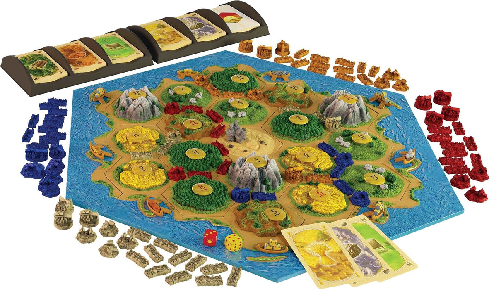
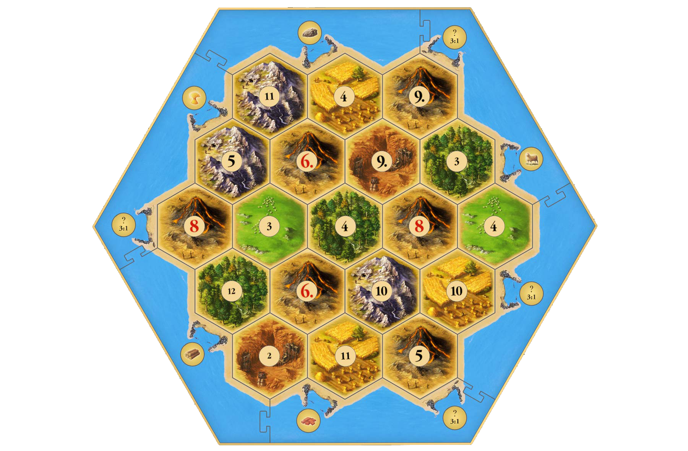
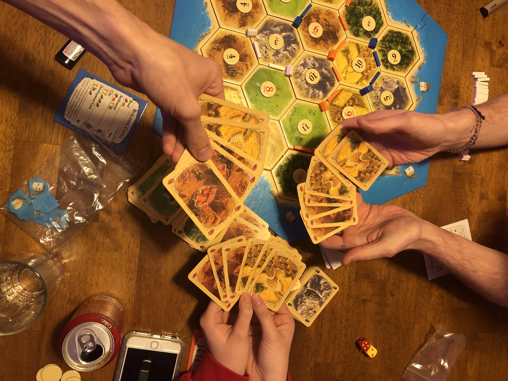
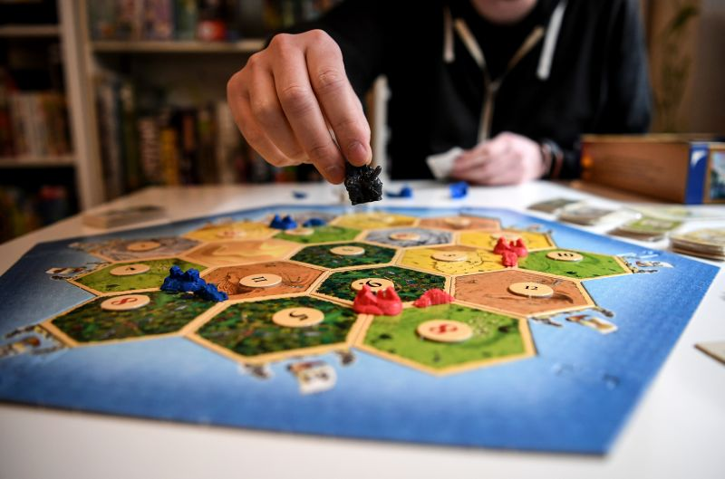
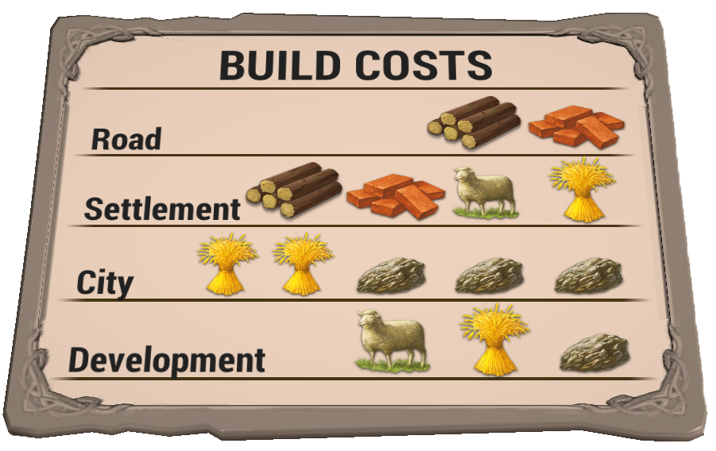
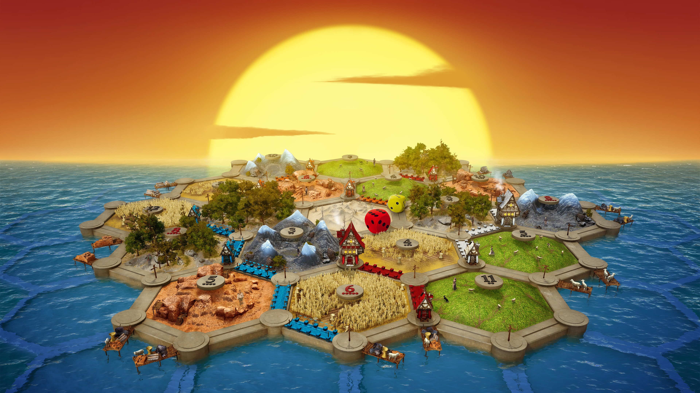

Scurtă descriereCATAN este un joc potrivit pentru 3-4 jucatori care are ca scop colonizarea unei insule numite Catan. Aceasta e formata din 19 regiuni si toate sunt inconjurate de apa. Regiunile sunt impartite in regiuni lemn, fier, argila, pasuni sau oi, fan si desertul. Toate acestea produc resurse mai putin desertul. Pentru colonizare se vor folosi cele trei tipuri de piese - drumuri, sate și orașe - care vor fi construite cu ajutorul resurselor câștigate de pe regiuni. |
 |
|  |
Începututl joculuiIn prima faza se contruieste harta, se aseaza cele 6 laturi care reprezinta oceanul si apoi hexagoanele si peste acestea jetoanele cu numere. Fiecare jucator isi alege o culoare si primeste toate piesele corespunzatoare: 5 asezari, 4 orase si 15 drumuri. Placile cu cel mai lung drum si cea mai mare armata se plaseaza langa harta. Teancurile cu resurse si cartile de dezvoltare se amesteca si se pun in suportul lor. Incepand cu primul jucator fiecare isi plaseaza pe harta 2 asezari si 2 drumuri, restul se pun in fata fiecaruia. Resursele de inceput ale fiecarui jucator sunt cele de pe ultima asezare pusa pe harta. Cartile cu resurse sunt tinute secrete fata de ceilalti jucatori. |
Cei trei simpli pasiJocul se desfasoara in cativa pasi: 1. Se arunca zarurile si se impart resursele fiecarui jucator. 2. Se pot incep comerturile. 3. Se pot construii drumuri, asezari si/ sau orase sau cumpara dezvoltari. |
 |
|  |
Aruncarea cu zaruri și comerțulAruncarea cu zaruri se face de fiecare jucator in parta incepand cu primul jucator. Pe acesta il alegeti aleator sau e cel mai in varsta de la masa. Suma zarurilor este va desemna regiunea sau regiunile care vor aduce resurse jucatorilor. Daca ai o asezare pe regiunea desemnata, vei primi o resursa. Daca ai un oras pe acea regiune vei primi cate 2 resurse. Comert poate face doar jucatorul al carui rand este in joc.Ceilalti jucatori nu au voie sa faca comert intre ei. Acesta are la dispozitie 2 tipuri de comert: 1. Comerțul cu partenerii de joc - jucatorul anunta ce schimb de resurse vrea sau poate asculta si accepta contraofertele celorlalti. 2. Comerțulcu banca - jucatorul poate face comert la rata de schimb 4:1 direct cu banca, sau dac? acesta are asesezare/ oras in zona portuara la rata de schimb 3:1 sau 2:1. Resursele trebuiesc sa fie de acelasi tip. 4 lemn pe 1 grau. |
Cum poți construiJucatorul al carui rand este in joc, poate construi asezari/ cladiri sau drumuri pentru a-si mari numarul de puncte. Pentru a construi, jucatorul trebuie sa plateasca catre banca combinatia de resurse in functie de ce se doreste. Pentru aceasta, exista la dispozitie un cartonaș cu resursele necesare fiecărei construcții. De asemenea, se pot lua și cărți de acțiune, fiecare având pe ea explicat rolul pe care îl are. Resursele se decarteaza in suportul special. |
 |
|  |
Sfârșitul joculuiJocul se incheie atunci cand un jucator este la rand in joc si are cumulat 10 sau mai multe puncte castigatoare. Așezările (satele) valorează un punct, iar orașele două. |